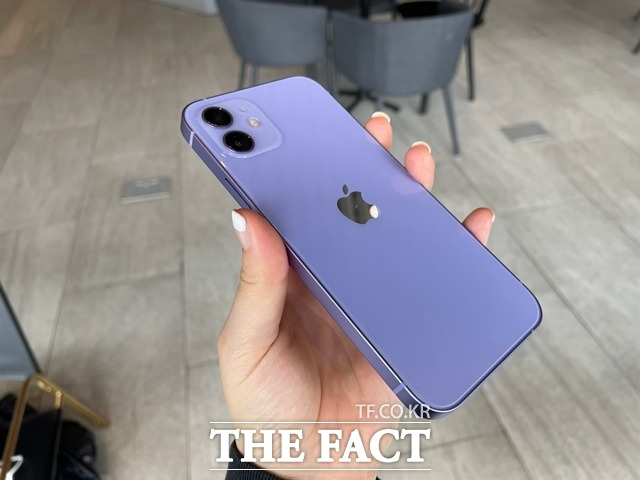

애플의 신작 '아이폰13' 시리즈가 국내 출격을 앞두고 있다. '혁신이 없다'는 혹평 속에서 이번에도 국내 소비자들의 선택을 받을 수 있을지 귀추가 주목된다.
27일 업계에 따르면 국내 이동통신사들은 다음 달 1일 '아이폰13' 시리즈 사전 예약 판매에 돌입한다. △'아이폰13 미니'(5.4형) △'아이폰13'(6.1형) △'아이폰13 프로'(6.1형) △'아이폰13 프로 맥스'(6.7형) 등 총 4가지 모델로 구성된 '아이폰13' 시리즈는 전작 '아이폰12' 시리즈와 비교해 디자인에 변화가 크지 않지만, A15바이오닉 칩을 탑재해 전반적으로 성능을 개선한 것이 특징이다.
미국을 비롯해 호주, 캐나다, 중국, 독일, 인도, 일본, 영국 등 1차 출시 대상 국가에서는 이미 '아이폰13' 시리즈의 출시가 이뤄졌다. 멕시코, 태국 등과 함께 2차 출시국으로 분류된 한국에서는 사전 예약을 거쳐 다음 달 8일 정식 출시된다.
업계는 '아이폰의 저력'이 이번에도 나타날지 주목하고 있다. '아이폰13' 시리즈가 지난 15일 공개된 직후부터 '혁신이 보이지 않는다'는 비판을 받았던 탓에 더더욱 그렇다. 경쟁사인 삼성전자가 폴더블폰 '갤럭시Z폴드3'와 '갤럭시Z플립3'로 시장을 선점한 상황도 무시할 수 없다. 특히 디자인 면에서 눈길을 끌고 있는 '갤럭시Z플립3'는 기존 '아이폰' 고객을 흡수하기에 충분하다는 평가를 받고 있다.
현재까지 '아이폰13'의 판매 전망은 나쁘지 않다. 고객 충성도가 워낙 높은 제품군인 만큼 쉽게 흔들리지 않을 것이란 설명이다. 실제로 '아이폰13' 시리즈는 중국 사전 예약에서 흥행 돌풍을 일으킨 것으로 알려졌다. 폰아레나 등 외신에 따르면 중국 온라인 쇼핑몰 징둥닷컴을 통한 '아이폰13' 사전 예약 가입자 수는 첫날에만 200만 명을 넘어섰다. 이는 '아이폰12' 사전 예약 판매량인 150만대보다 높은 수치로, 일각에서는 중국 초기 수요 확대에 힘입어 '아이폰13' 판매량이 전작을 뛰어넘을 것이란 예상이 나온다. '아이폰12'의 10개월 누적 판매량은 1억5000만대에 근접한 것으로 추정되고 있다.